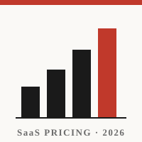

Every SaaS company in 2026 is asking the same two questions: is per-seat pricing dying, and how should we charge for AI? The industry answers with confident statistics — most repeated of all, that 73% of vendors now charge separately for AI features.
The problem is that nobody can check it. That figure comes from vendor surveys whose samples aren't published and whose definitions aren't stated. And the published estimates for the same question don't agree with each other — they range from 16% to 73%, a 4.5× spread. There was no open dataset to settle it.
So I built one: I collected pricing data from 198 leading SaaS companies directly from their live pricing pages, and used it to answer the questions with evidence instead of citation.
Sampling. 198 recognisable B2B SaaS companies, 18 in each of 11 categories — dev tools, data & analytics, CRM, martech, collaboration, design, security, HR, fintech-ops, support and AI-native — balanced so no segment skews the result.
Collection. Each live pricing page was read and converted into 23 structured fields: pricing model, tier names, entry price, how AI is charged, where SSO sits. Prices normalised to USD per month. No third-party datasets, no synthetic data.
Recovery. The most valuable pages fight back — Salesforce, OpenAI, Adobe and Canva block scrapers or render prices in JavaScript. Those were recovered with a headless browser and manual verification, lifting coverage from 80% to 96%.
Validation. Every headline number was recomputed through three independent paths — a direct recount from the raw files, the analysis pipeline, and the exported dashboard dataset — and all three agree exactly. Field-level extraction accuracy is roughly 90%, and every row carries its source URL and a quoted snippet so any value can be audited.
From 191 companies with usable pricing data (96% of the sample), across 11 categories.
I built the analysis into a Tableau dashboard, published live on Tableau Public. It is fully interactive — filter the whole dataset by category and explore every finding below.
The headline finding is that the most-repeated statistic in SaaS pricing is roughly double the reality. I am not claiming the reports are dishonest — I am claiming three specific things: they disagree with one another by 4.5×, the 73% figure is not reproducible from public pricing pages, and the gap is largely definitional. “Has a paid AI option somewhere” is a much easier bar than “the pricing page shows you paying more.”
| Source | What it claims to measure | Figure |
|---|---|---|
| McKinsey | Monetised AI as a standalone product | 16% |
| This study | Pricing page shows the customer paying extra for AI | 34% |
| High Alpha / Zylo | Formally monetising AI features | 41% |
| BCG | Restricted AI to premium tiers | 68% |
| CloudNuro | Charge separately for AI | 73% |
My measurement sits between the two independent research estimates — McKinsey's 16% and Zylo's 41%. The outliers are the aggregator figures. In other words, the checkable number lands inside the cluster of rigorous sources, not outside it.